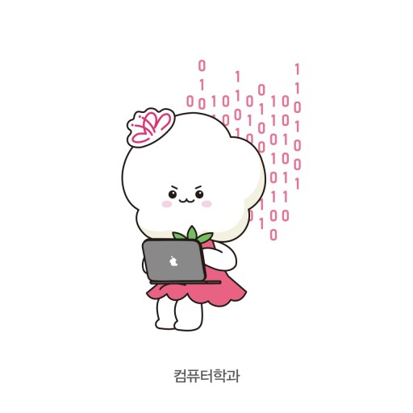

미래의 나를 위하여 내가 지금 해야하는 활동들
- 모든수업 열심히들으며 학점 챙기기(특히 전공)
- 2학년때 전공관련동아리에 들어가서 프로젝트 해보기
- 전공관련 도서,영상등을보고 내가 어떤분야로 나아가고싶은지 생각하기
- 1학년때 해보고싶은 활동 다양하게 참여해서 많은 경험해보기
21살 새내기 지만 동기들, 선배들과 친하게 지내며 학교 생활에 잘 적응했으면 좋겠고
컴퓨터학과에서 많은 지식들을 습득해 사회생활을 할때쯤엔 자랑스런 동덕인이 될수있게 노력할것이다!
화이팅!
